20 2D bins and fields
These charts colour a plane: a cell per row (tile), counts in 2D bins (bin2d), and a field as a raster (field) or as level lines (contour). Use them for points too dense to draw one by one, or for a value over two variables.
(ns reference.charts-bins-fields
(:require [fastmath.core :as m]
[cljplot2.chart :as chart]
[cljplot2.core :as plot]
[cljplot2.describe :as describe]
[notebook-utils :as nu]))Data: Old Faithful geyser eruptions, R datasets package faithful (Härdle 1991; Azzalini & Bowman 1990); licence: Part of R (GPL-2 | GPL-3).
(def faithful (nu/dataset :faithful))| eruptions | waiting |
|---|---|
| 3.6 | 79 |
| 1.8 | 54 |
| 3.333 | 74 |
| 2.283 | 62 |
| 4.533 | 85 |
| 2.883 | 55 |
| 4.7 | 88 |
| 3.6 | 85 |
| 1.95 | 51 |
| 4.35 | 85 |
| 1.833 | 54 |
| 3.917 | 84 |
| 4.2 | 78 |
| 1.75 | 47 |
| 4.7 | 83 |
| 2.167 | 52 |
| 1.75 | 62 |
| 4.8 | 84 |
| 1.6 | 52 |
| 4.25 | 79 |
| 1.8 | 51 |
| 1.75 | 47 |
| 3.45 | 78 |
| 3.067 | 69 |
| 4.533 | 74 |
| 3.6 | 83 |
| 1.967 | 55 |
| 4.083 | 76 |
| 3.85 | 78 |
| 4.433 | 79 |
| 4.3 | 73 |
| 4.467 | 77 |
| 3.367 | 66 |
| 4.033 | 80 |
| 3.833 | 74 |
| 2.017 | 52 |
| 1.867 | 48 |
| 4.833 | 80 |
| 1.833 | 59 |
| 4.783 | 90 |
| 4.35 | 80 |
| 1.883 | 58 |
| 4.567 | 84 |
| 1.75 | 58 |
| 4.533 | 73 |
| 3.317 | 83 |
| 3.833 | 64 |
| 2.1 | 53 |
| 4.633 | 82 |
| 2 | 59 |
| 4.8 | 75 |
| 4.716 | 90 |
| 1.833 | 54 |
| 4.833 | 80 |
| 1.733 | 54 |
| 4.883 | 83 |
| 3.717 | 71 |
| 1.667 | 64 |
| 4.567 | 77 |
| 4.317 | 81 |
| 2.233 | 59 |
| 4.5 | 84 |
| 1.75 | 48 |
| 4.8 | 82 |
| 1.817 | 60 |
| 4.4 | 92 |
| 4.167 | 78 |
| 4.7 | 78 |
| 2.067 | 65 |
| 4.7 | 73 |
| 4.033 | 82 |
| 1.967 | 56 |
| 4.5 | 79 |
| 4 | 71 |
| 1.983 | 62 |
| 5.067 | 76 |
| 2.017 | 60 |
| 4.567 | 78 |
| 3.883 | 76 |
| 3.6 | 83 |
| 4.133 | 75 |
| 4.333 | 82 |
| 4.1 | 70 |
| 2.633 | 65 |
| 4.067 | 73 |
| 4.933 | 88 |
| 3.95 | 76 |
| 4.517 | 80 |
| 2.167 | 48 |
| 4 | 86 |
| 2.2 | 60 |
| 4.333 | 90 |
| 1.867 | 50 |
| 4.817 | 78 |
| 1.833 | 63 |
| 4.3 | 72 |
| 4.667 | 84 |
| 3.75 | 75 |
| 1.867 | 51 |
| 4.9 | 82 |
| … | … |
Data: Maunga Whau volcano topography, R datasets package volcano (Ross Ihaka); licence: Part of R (GPL-2 | GPL-3).
(def volcano (nu/dataset :volcano))| row | column | height |
|---|---|---|
| 1 | 1 | 100 |
| 2 | 1 | 101 |
| 3 | 1 | 102 |
| 4 | 1 | 103 |
| 5 | 1 | 104 |
| 6 | 1 | 105 |
| 7 | 1 | 105 |
| 8 | 1 | 106 |
| 9 | 1 | 107 |
| 10 | 1 | 108 |
| 11 | 1 | 109 |
| 12 | 1 | 110 |
| 13 | 1 | 110 |
| 14 | 1 | 111 |
| 15 | 1 | 114 |
| 16 | 1 | 116 |
| 17 | 1 | 118 |
| 18 | 1 | 120 |
| 19 | 1 | 120 |
| 20 | 1 | 121 |
| 21 | 1 | 122 |
| 22 | 1 | 122 |
| 23 | 1 | 123 |
| 24 | 1 | 124 |
| 25 | 1 | 123 |
| 26 | 1 | 123 |
| 27 | 1 | 120 |
| 28 | 1 | 118 |
| 29 | 1 | 117 |
| 30 | 1 | 115 |
| 31 | 1 | 114 |
| 32 | 1 | 115 |
| 33 | 1 | 113 |
| 34 | 1 | 111 |
| 35 | 1 | 110 |
| 36 | 1 | 109 |
| 37 | 1 | 108 |
| 38 | 1 | 108 |
| 39 | 1 | 107 |
| 40 | 1 | 107 |
| 41 | 1 | 107 |
| 42 | 1 | 108 |
| 43 | 1 | 109 |
| 44 | 1 | 110 |
| 45 | 1 | 111 |
| 46 | 1 | 111 |
| 47 | 1 | 112 |
| 48 | 1 | 113 |
| 49 | 1 | 113 |
| 50 | 1 | 114 |
| 51 | 1 | 115 |
| 52 | 1 | 115 |
| 53 | 1 | 114 |
| 54 | 1 | 113 |
| 55 | 1 | 112 |
| 56 | 1 | 111 |
| 57 | 1 | 111 |
| 58 | 1 | 112 |
| 59 | 1 | 112 |
| 60 | 1 | 112 |
| 61 | 1 | 113 |
| 62 | 1 | 114 |
| 63 | 1 | 114 |
| 64 | 1 | 115 |
| 65 | 1 | 115 |
| 66 | 1 | 116 |
| 67 | 1 | 116 |
| 68 | 1 | 117 |
| 69 | 1 | 117 |
| 70 | 1 | 116 |
| 71 | 1 | 114 |
| 72 | 1 | 112 |
| 73 | 1 | 109 |
| 74 | 1 | 106 |
| 75 | 1 | 104 |
| 76 | 1 | 102 |
| 77 | 1 | 101 |
| 78 | 1 | 100 |
| 79 | 1 | 100 |
| 80 | 1 | 99 |
| 81 | 1 | 99 |
| 82 | 1 | 99 |
| 83 | 1 | 99 |
| 84 | 1 | 98 |
| 85 | 1 | 98 |
| 86 | 1 | 97 |
| 87 | 1 | 97 |
| 1 | 2 | 100 |
| 2 | 2 | 101 |
| 3 | 2 | 102 |
| 4 | 2 | 103 |
| 5 | 2 | 104 |
| 6 | 2 | 105 |
| 7 | 2 | 106 |
| 8 | 2 | 107 |
| 9 | 2 | 108 |
| 10 | 2 | 109 |
| 11 | 2 | 110 |
| 12 | 2 | 110 |
| 13 | 2 | 111 |
| … | … | … |
Data: Edgar Anderson’s iris measurements, R datasets package iris (Anderson 1935; Fisher 1936); licence: Part of R (GPL-2 | GPL-3).
(def iris (nu/dataset :iris))| sepal-length | sepal-width | petal-length | petal-width | species |
|---|---|---|---|---|
| 5.1 | 3.5 | 1.4 | 0.2 | setosa |
| 4.9 | 3 | 1.4 | 0.2 | setosa |
| 4.7 | 3.2 | 1.3 | 0.2 | setosa |
| 4.6 | 3.1 | 1.5 | 0.2 | setosa |
| 5 | 3.6 | 1.4 | 0.2 | setosa |
| 5.4 | 3.9 | 1.7 | 0.4 | setosa |
| 4.6 | 3.4 | 1.4 | 0.3 | setosa |
| 5 | 3.4 | 1.5 | 0.2 | setosa |
| 4.4 | 2.9 | 1.4 | 0.2 | setosa |
| 4.9 | 3.1 | 1.5 | 0.1 | setosa |
| 5.4 | 3.7 | 1.5 | 0.2 | setosa |
| 4.8 | 3.4 | 1.6 | 0.2 | setosa |
| 4.8 | 3 | 1.4 | 0.1 | setosa |
| 4.3 | 3 | 1.1 | 0.1 | setosa |
| 5.8 | 4 | 1.2 | 0.2 | setosa |
| 5.7 | 4.4 | 1.5 | 0.4 | setosa |
| 5.4 | 3.9 | 1.3 | 0.4 | setosa |
| 5.1 | 3.5 | 1.4 | 0.3 | setosa |
| 5.7 | 3.8 | 1.7 | 0.3 | setosa |
| 5.1 | 3.8 | 1.5 | 0.3 | setosa |
| 5.4 | 3.4 | 1.7 | 0.2 | setosa |
| 5.1 | 3.7 | 1.5 | 0.4 | setosa |
| 4.6 | 3.6 | 1 | 0.2 | setosa |
| 5.1 | 3.3 | 1.7 | 0.5 | setosa |
| 4.8 | 3.4 | 1.9 | 0.2 | setosa |
| 5 | 3 | 1.6 | 0.2 | setosa |
| 5 | 3.4 | 1.6 | 0.4 | setosa |
| 5.2 | 3.5 | 1.5 | 0.2 | setosa |
| 5.2 | 3.4 | 1.4 | 0.2 | setosa |
| 4.7 | 3.2 | 1.6 | 0.2 | setosa |
| 4.8 | 3.1 | 1.6 | 0.2 | setosa |
| 5.4 | 3.4 | 1.5 | 0.4 | setosa |
| 5.2 | 4.1 | 1.5 | 0.1 | setosa |
| 5.5 | 4.2 | 1.4 | 0.2 | setosa |
| 4.9 | 3.1 | 1.5 | 0.2 | setosa |
| 5 | 3.2 | 1.2 | 0.2 | setosa |
| 5.5 | 3.5 | 1.3 | 0.2 | setosa |
| 4.9 | 3.6 | 1.4 | 0.1 | setosa |
| 4.4 | 3 | 1.3 | 0.2 | setosa |
| 5.1 | 3.4 | 1.5 | 0.2 | setosa |
| 5 | 3.5 | 1.3 | 0.3 | setosa |
| 4.5 | 2.3 | 1.3 | 0.3 | setosa |
| 4.4 | 3.2 | 1.3 | 0.2 | setosa |
| 5 | 3.5 | 1.6 | 0.6 | setosa |
| 5.1 | 3.8 | 1.9 | 0.4 | setosa |
| 4.8 | 3 | 1.4 | 0.3 | setosa |
| 5.1 | 3.8 | 1.6 | 0.2 | setosa |
| 4.6 | 3.2 | 1.4 | 0.2 | setosa |
| 5.3 | 3.7 | 1.5 | 0.2 | setosa |
| 5 | 3.3 | 1.4 | 0.2 | setosa |
| 7 | 3.2 | 4.7 | 1.4 | versicolor |
| 6.4 | 3.2 | 4.5 | 1.5 | versicolor |
| 6.9 | 3.1 | 4.9 | 1.5 | versicolor |
| 5.5 | 2.3 | 4 | 1.3 | versicolor |
| 6.5 | 2.8 | 4.6 | 1.5 | versicolor |
| 5.7 | 2.8 | 4.5 | 1.3 | versicolor |
| 6.3 | 3.3 | 4.7 | 1.6 | versicolor |
| 4.9 | 2.4 | 3.3 | 1 | versicolor |
| 6.6 | 2.9 | 4.6 | 1.3 | versicolor |
| 5.2 | 2.7 | 3.9 | 1.4 | versicolor |
| 5 | 2 | 3.5 | 1 | versicolor |
| 5.9 | 3 | 4.2 | 1.5 | versicolor |
| 6 | 2.2 | 4 | 1 | versicolor |
| 6.1 | 2.9 | 4.7 | 1.4 | versicolor |
| 5.6 | 2.9 | 3.6 | 1.3 | versicolor |
| 6.7 | 3.1 | 4.4 | 1.4 | versicolor |
| 5.6 | 3 | 4.5 | 1.5 | versicolor |
| 5.8 | 2.7 | 4.1 | 1 | versicolor |
| 6.2 | 2.2 | 4.5 | 1.5 | versicolor |
| 5.6 | 2.5 | 3.9 | 1.1 | versicolor |
| 5.9 | 3.2 | 4.8 | 1.8 | versicolor |
| 6.1 | 2.8 | 4 | 1.3 | versicolor |
| 6.3 | 2.5 | 4.9 | 1.5 | versicolor |
| 6.1 | 2.8 | 4.7 | 1.2 | versicolor |
| 6.4 | 2.9 | 4.3 | 1.3 | versicolor |
| 6.6 | 3 | 4.4 | 1.4 | versicolor |
| 6.8 | 2.8 | 4.8 | 1.4 | versicolor |
| 6.7 | 3 | 5 | 1.7 | versicolor |
| 6 | 2.9 | 4.5 | 1.5 | versicolor |
| 5.7 | 2.6 | 3.5 | 1 | versicolor |
| 5.5 | 2.4 | 3.8 | 1.1 | versicolor |
| 5.5 | 2.4 | 3.7 | 1 | versicolor |
| 5.8 | 2.7 | 3.9 | 1.2 | versicolor |
| 6 | 2.7 | 5.1 | 1.6 | versicolor |
| 5.4 | 3 | 4.5 | 1.5 | versicolor |
| 6 | 3.4 | 4.5 | 1.6 | versicolor |
| 6.7 | 3.1 | 4.7 | 1.5 | versicolor |
| 6.3 | 2.3 | 4.4 | 1.3 | versicolor |
| 5.6 | 3 | 4.1 | 1.3 | versicolor |
| 5.5 | 2.5 | 4 | 1.3 | versicolor |
| 5.5 | 2.6 | 4.4 | 1.2 | versicolor |
| 6.1 | 3 | 4.6 | 1.4 | versicolor |
| 5.8 | 2.6 | 4 | 1.2 | versicolor |
| 5 | 2.3 | 3.3 | 1 | versicolor |
| 5.6 | 2.7 | 4.2 | 1.3 | versicolor |
| 5.7 | 3 | 4.2 | 1.2 | versicolor |
| 5.7 | 2.9 | 4.2 | 1.3 | versicolor |
| 6.2 | 2.9 | 4.3 | 1.3 | versicolor |
| 5.1 | 2.5 | 3 | 1.1 | versicolor |
| 5.7 | 2.8 | 4.1 | 1.3 | versicolor |
| … | … | … | … | … |
The table below holds made-up visits per hour of a working week; the heatmaps use it:
(def week-hours (for [[i day] (map-indexed vector ["Mon" "Tue" "Wed" "Thu" "Fri"]) hour (range 8 18)]
{:day day :hour hour
:visits (+ 10 (* 3 (mod (* (inc i) hour) 7)) (if (< 11 hour 14) 15 0))}))| day | hour | visits |
|---|---|---|
| Mon | 8 | 13 |
| Mon | 9 | 16 |
| Mon | 10 | 19 |
| Mon | 11 | 22 |
| Mon | 12 | 40 |
| Mon | 13 | 43 |
| Mon | 14 | 10 |
| Mon | 15 | 13 |
| Mon | 16 | 16 |
| Mon | 17 | 19 |
| Tue | 8 | 16 |
| Tue | 9 | 22 |
| Tue | 10 | 28 |
| Tue | 11 | 13 |
| Tue | 12 | 34 |
| Tue | 13 | 40 |
| Tue | 14 | 10 |
| Tue | 15 | 16 |
| Tue | 16 | 22 |
| Tue | 17 | 28 |
| Wed | 8 | 19 |
| Wed | 9 | 28 |
| Wed | 10 | 16 |
| Wed | 11 | 25 |
| Wed | 12 | 28 |
| Wed | 13 | 37 |
| Wed | 14 | 10 |
| Wed | 15 | 19 |
| Wed | 16 | 28 |
| Wed | 17 | 16 |
| Thu | 8 | 22 |
| Thu | 9 | 13 |
| Thu | 10 | 25 |
| Thu | 11 | 16 |
| Thu | 12 | 43 |
| Thu | 13 | 34 |
| Thu | 14 | 10 |
| Thu | 15 | 22 |
| Thu | 16 | 13 |
| Thu | 17 | 25 |
| Fri | 8 | 25 |
| Fri | 9 | 19 |
| Fri | 10 | 13 |
| Fri | 11 | 28 |
| Fri | 12 | 37 |
| Fri | 13 | 31 |
| Fri | 14 | 10 |
| Fri | 15 | 25 |
| Fri | 16 | 19 |
| Fri | 17 | 13 |
20.1 Heatmaps
chart/tile draws a cell per row at its x and y, filled by the mapped colour: numbers through a gradient, categories through a palette. Use it for a value over two variables, e.g. a matrix or a week of hours.
:mapping:xrequired – The x of each cell: categorical values give a cell per level; numbers centre cells on the values, as wide as the smallest gap between them.:yrequired – The y of each cell: categorical values give a cell per level; numbers centre cells on the values, as tall as the smallest gap between them.:colorrequired – Fills each cell: numbers through a gradient with a colour bar, categorical values through a palette with a legend;niltakes the NA colour.:size– Shrinks each cell by:cell-scaletimes its size over the size scale's largest.
(plot/render-image {:data week-hours
:mapping {:x :hour :y :day :color :visits}
:charts [(chart/tile)]
:scales {:y {:reverse true}}}
{:width 600 :height 300})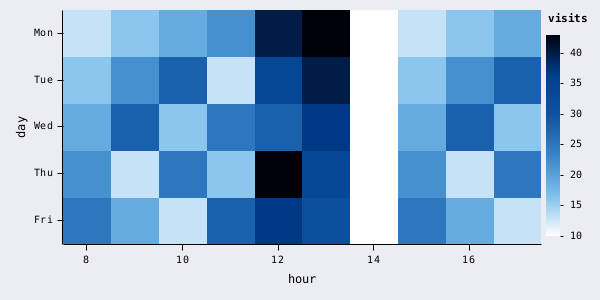
This option writes the value in each cell, in the :tile-value text role; the cell shape and outline are the Cell style group. The panels below write the values, then a word above 30:
(plot/render-image (plot/arrange [{:data week-hours
:mapping {:x :hour :y :day :color :visits}
:charts [(chart/tile {:value-label true})]
:scales {:y {:reverse true}}
:labels {:title ":value-label true"}
:legend false}
{:data week-hours
:mapping {:x :hour :y :day :color :visits}
:charts [(chart/tile {:value-label #(when (< 30 (:value %)) "busy")})]
:scales {:y {:reverse true}}
:labels {:title "a function: \"busy\" above 30"}}]
{:columns 2 :widths [1 1.15]})
{:width 1000 :height 300})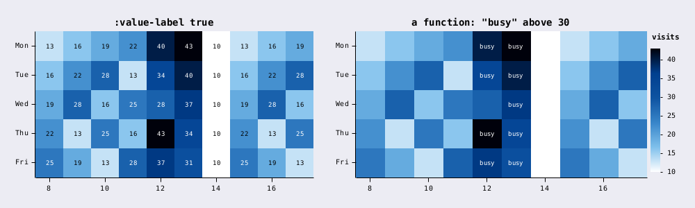
A mapped :size shrinks each cell by its value. With the colour mapped to another variable, the size legend’s keys have no colour of their own: a theme key fills them. The plot below fills them orange:
[:theme :chart :tile], not options:size-key-fill(default[180 180 180]) – The fill of a size legend key without a colour; a theme key, not an option.
(plot/render-image {:data week-hours
:mapping {:x :hour :y :day :color :day :size :visits}
:charts [(chart/tile)]
:scales {:y {:reverse true}}
:theme {:chart {:tile {:size-key-fill [200 120 60]}}}}
{:width 600 :height 300})
20.2 2D bins
chart/bin2d counts points in cells, hexagons by default, and colours each cell by its count or another measure. Use it when points are too many to draw: the colour shows where they crowd.
:mapping:xrequired – The x of each point, a number.:yrequired – The y of each point, a number.:color– Must benil: the cell colour shows:measure. Set:color nilin the chart's own mapping when the plot maps:color.
(plot/render-image {:data faithful
:mapping {:x :eruptions :y :waiting}
:charts [(chart/bin2d)]
:labels {:x "eruption [min]" :y "waiting [min]"}}
{:width 600 :height 400})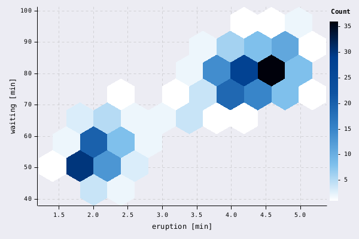
These options set the cell size (by a rule, a count or a width), the shape of the binning space and what the colour measures. The panels below use 10 cells across, a cell width in a flatter space, and percentages:
(plot/render-image (plot/arrange [{:data faithful
:mapping {:x :eruptions :y :waiting}
:charts [(chart/bin2d {:bins 10})]
:labels {:title ":bins 10"}
:legend false}
{:data faithful
:mapping {:x :eruptions :y :waiting}
:charts [(chart/bin2d {:binwidth 0.25 :aspect 0.5})]
:labels {:title ":binwidth 0.25 :aspect 0.5"}
:legend false}
{:data faithful
:mapping {:x :eruptions :y :waiting}
:charts [(chart/bin2d {:measure :percent})]
:labels {:title ":measure :percent"}}]
{:columns 3 :widths [1 1 1.3]})
{:width 1000 :height 320})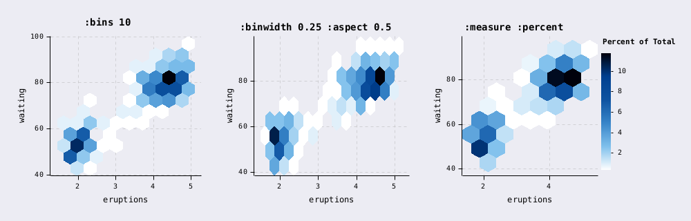
The next panels compare the other rules (the default :scott-correlated is above); each picks its own cell size:
(plot/render-image (plot/arrange [{:data faithful
:mapping {:x :eruptions :y :waiting}
:charts [(chart/bin2d {:bins :scott})]
:labels {:title ":bins :scott"}
:legend false}
{:data faithful
:mapping {:x :eruptions :y :waiting}
:charts [(chart/bin2d {:bins :freedman-diaconis})]
:labels {:title ":bins :freedman-diaconis"}
:legend false}
{:data faithful
:mapping {:x :eruptions :y :waiting}
:charts [(chart/bin2d {:bins :cross-validation})]
:labels {:title ":bins :cross-validation"}
:legend false}
{:data faithful
:mapping {:x :eruptions :y :waiting}
:charts [(chart/bin2d {:bins :shimazaki-shinomoto})]
:labels {:title ":bins :shimazaki-shinomoto"}
:legend false}]
{:columns 2})
{:width 900 :height 600})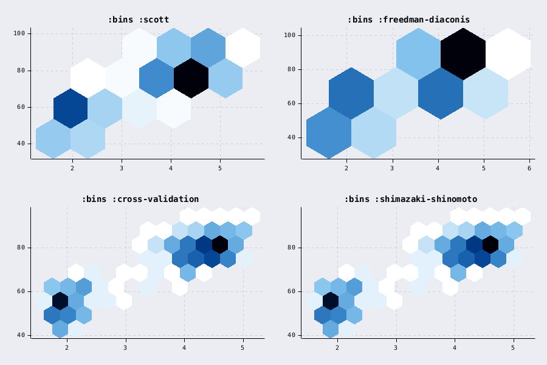
The last panels colour by the share of the panel’s points (:pmf) and by the density; their legends show the scales:
(plot/render-image (plot/arrange [{:data faithful
:mapping {:x :eruptions :y :waiting}
:charts [(chart/bin2d {:measure :pmf})]
:labels {:title ":measure :pmf"}}
{:data faithful
:mapping {:x :eruptions :y :waiting}
:charts [(chart/bin2d {:measure :density})]
:labels {:title ":measure :density"}}]
{:columns 2})
{:width 900 :height 340})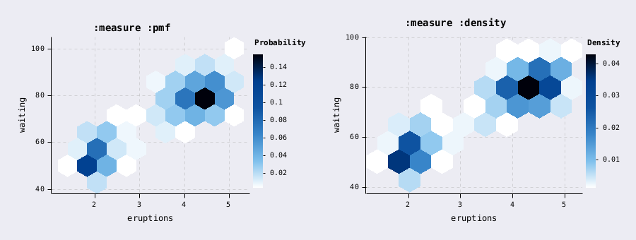
20.3 Raster fields
chart/field draws a scalar field as a raster: the density of mapped points, gridded values interpolated, or a function of a point (the Fields group). Use it to show a smooth value over a plane, coloured through the colour scale.
:mapping:x– The x of the points whose density the chart estimates, or of the gridded values.:y– The y of the points whose density the chart estimates, or of the gridded values.:value– The field's value at each point of a full lattice of x and y, interpolated between them; unmapped, the field is the density of the points.:color– Must benil: the colour shows the field's value. Set:color nilin the chart's own mapping when the plot maps:color.
(plot/render-image (plot/arrange [{:data faithful
:mapping {:x :eruptions :y :waiting}
:charts [(chart/field)]
:labels {:title "density of the points"}
:legend false}
{:data volcano
:mapping {:x :column :y :row :value :height}
:charts [(chart/field)]
:labels {:title "gridded :value"}}]
{:columns 2 :widths [1 1.2]})
{:width 1000 :height 380})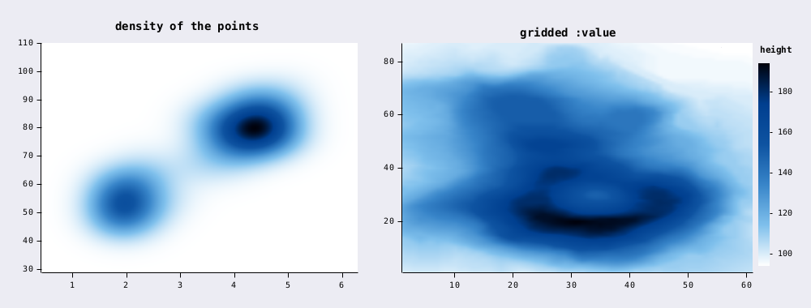
These options set the raster’s opacity, or colour each pixel by a function instead of a field. The panels below draw a translucent density under the points, then a colour per point of a disc:
(plot/render-image (plot/arrange [{:data faithful
:mapping {:x :eruptions :y :waiting}
:charts [(chart/field {:alpha-factor 0.5}) (chart/scatter {:size 3 :color :black})]
:labels {:title ":alpha-factor 0.5, points over it"}
:legend false}
{:charts [(chart/field {:domain {:x [-2 2] :y [-2 2]}
:pixel-color (fn [[x y]]
(when (< (+ (* x x) (* y y)) 3)
[(int (* 60 (+ x 2))) 80 (int (* 60 (+ y 2)))]))})]
:labels {:title ":pixel-color - a colour per point"}}]
{:columns 2})
{:width 900 :height 380})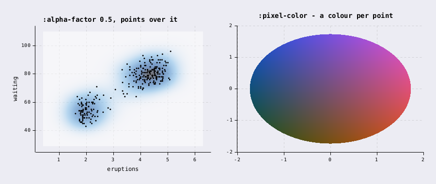
20.3.1 Field sources
The Fields group gives the field. The panels below sample a function of a point [x y] over a :domain, then on a coarse grid of 12 points per axis, which shows its cells:
(plot/render-image (plot/arrange [{:charts [(chart/field {:f (fn [[x y]] (m/sin (+ (* x x) (* y y))))
:domain {:x [-2 2] :y [-2 2]}})]
:labels {:title ":f over :domain"}
:legend false}
{:charts [(chart/field {:f (fn [[x y]] (m/sin (+ (* x x) (* y y))))
:domain {:x [-2 2] :y [-2 2]} :n 12})]
:labels {:title ":n 12"}}]
{:columns 2 :widths [1 1.2]})
{:width 900 :height 380})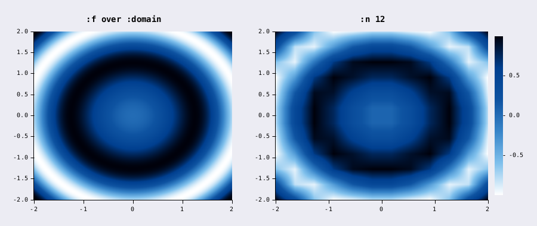
The chart interpolates gridded values between the lattice points, here of a 5 x 5 lattice:
(def lattice (for [x (range 5) y (range 5)] {:x x :y y :z (* (m/sin x) (m/cos (* 0.8 y)))}))| x | y | z |
|---|---|---|
| 0 | 0 | 0.0 |
| 0 | 1 | 0.0 |
| 0 | 2 | -0.0 |
| 0 | 3 | -0.0 |
| 0 | 4 | -0.0 |
| 1 | 0 | 0.8414709848078965 |
| 1 | 1 | 0.5862584808366281 |
| 1 | 2 | -0.024570550786785637 |
| 1 | 3 | -0.620495416007646 |
| 1 | 4 | -0.8400360881165891 |
| 2 | 0 | 0.9092974268256817 |
| 2 | 1 | 0.6335136180615656 |
| 2 | 2 | -0.02655105049310103 |
| 2 | 3 | -0.6705102080990835 |
| 2 | 4 | -0.9077468708436899 |
| 3 | 0 | 0.1411200080598672 |
| 3 | 1 | 0.09831925643843555 |
| 3 | 2 | -0.00412063682250215 |
| 3 | 3 | -0.10406100708047604 |
| 3 | 4 | -0.14087936680627888 |
| 4 | 0 | -0.7568024953079282 |
| 4 | 1 | -0.5272693761317102 |
| 4 | 2 | 0.022098271339414874 |
| 4 | 3 | 0.5580614039459993 |
| 4 | 4 | 0.7555119773743378 |
(plot/render-image (plot/arrange [{:data lattice
:mapping {:x :x :y :y :value :z}
:charts [(chart/field {:interpolation :bilinear})]
:labels {:title ":interpolation :bilinear"}
:legend false}
{:data lattice
:mapping {:x :x :y :y :value :z}
:charts [(chart/field {:interpolation :bicubic})]
:labels {:title ":interpolation :bicubic"}
:legend false}
{:data lattice
:mapping {:x :x :y :y :value :z}
:charts [(chart/field {:interpolation :cubic-2d})]
:labels {:title ":interpolation :cubic-2d"}}]
{:columns 3 :widths [1 1 1.25]})
{:width 1000 :height 320})
The next panels change the density estimate of mapped points: its kernel and bandwidth, a binned estimate (faster on many points), and how far the domain reaches past the points (:cut, in bandwidths):
(plot/render-image (plot/arrange [{:data faithful
:mapping {:x :eruptions :y :waiting}
:charts [(chart/field {:kernel :epanechnikov :bandwidth [0.2 4]})]
:labels {:title "epanechnikov, bandwidth [0.2 4]"}
:legend false}
{:data faithful
:mapping {:x :eruptions :y :waiting}
:charts [(chart/field {:binned true})]
:labels {:title ":binned true"}
:legend false}
{:data faithful
:mapping {:x :eruptions :y :waiting}
:charts [(chart/field {:cut 0})]
:labels {:title ":cut 0"}
:legend false}]
{:columns 3})
{:width 1000 :height 320})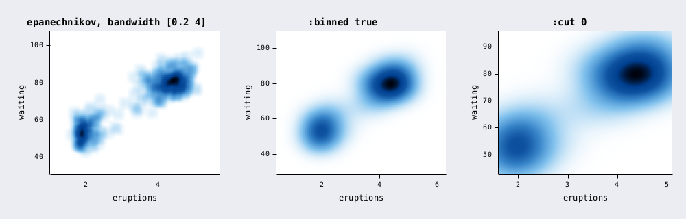
20.4 Contour lines
chart/contour draws the level lines, or filled bands, of a scalar field from the same sources as chart/field; categorical groups give a field each. Use it to read heights off a field, or to compare the densities of groups.
:mapping:x– The x of the points whose density the chart estimates, or of the gridded values.:y– The y of the points whose density the chart estimates, or of the gridded values.:value– The field's value at each point of a full lattice of x and y, interpolated between them; unmapped, the field is the density of the points.:color– Splits the rows into categorical groups, each its own field with lines in its colour; unmapped, the lines are coloured by level.:dash– Splits the rows into groups, each its own field with lines in its dash style.:group– Splits the rows into groups that look the same, each its own field.
(plot/render-image (plot/arrange [{:data volcano
:mapping {:x :column :y :row :value :height}
:charts [(chart/contour)]
:labels {:title "gridded :value"}
:legend false}
{:data iris
:mapping {:x :sepal-length :y :sepal-width :color :species}
:charts [(chart/contour {:levels 6})]
:labels {:title "a density per :color group"}}]
{:columns 2 :widths [1 1.25]})
{:width 1000 :height 380})
These options set the levels, filled bands instead of lines, labels on the lines, one line colour and the opacity. The panels below label lines at given heights, then fill 8 bands:
(plot/render-image (plot/arrange [{:data volcano
:mapping {:x :column :y :row :value :height}
:charts [(chart/contour {:levels [100 120 140 160 180] :labels true
:color [40 40 40]})]
:labels {:title ":levels vector, :labels true"}}
{:data volcano
:mapping {:x :column :y :row :value :height}
:charts [(chart/contour {:filled true :levels 8 :alpha-factor 0.8})]
:labels {:title ":filled true :levels 8"}}]
{:columns 2 :widths [1 1.25]})
{:width 1000 :height 380})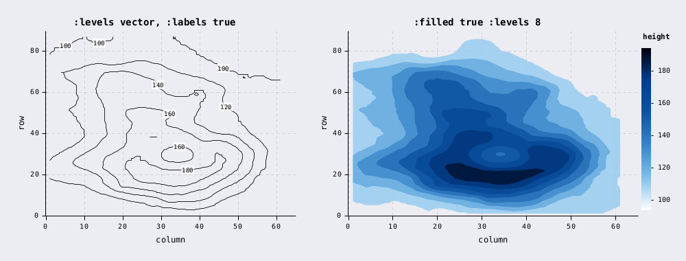
20.4.1 Contour sources
The panels below take the sources of chart/field: a function over a domain (its lines angular on a coarse grid), interpolated gridded values and a density with its own bandwidth:
(plot/render-image (plot/arrange [{:charts [(chart/contour {:f (fn [[x y]] (+ (* x x) (* 2 y y) (* x y)))
:domain {:x [-2 2] :y [-2 2]} :labels true})]
:labels {:title ":f over :domain"}
:legend false}
{:charts [(chart/contour {:f (fn [[x y]] (+ (* x x) (* 2 y y) (* x y)))
:domain {:x [-2 2] :y [-2 2]} :n 6})]
:labels {:title ":n 6"}
:legend false}
{:data lattice
:mapping {:x :x :y :y :value :z}
:charts [(chart/contour {:interpolation :bicubic :levels 8})]
:labels {:title "5 x 5 lattice, :bicubic"}
:legend false}
{:data faithful
:mapping {:x :eruptions :y :waiting}
:charts [(chart/scatter {:size 3 :color [0 0 0 80]})
(chart/contour {:bandwidth [0.15 3] :cut 1})]
:labels {:title ":bandwidth [0.15 3] :cut 1"}}]
{:columns 2 :widths [1 1.25]})
{:width 900 :height 640})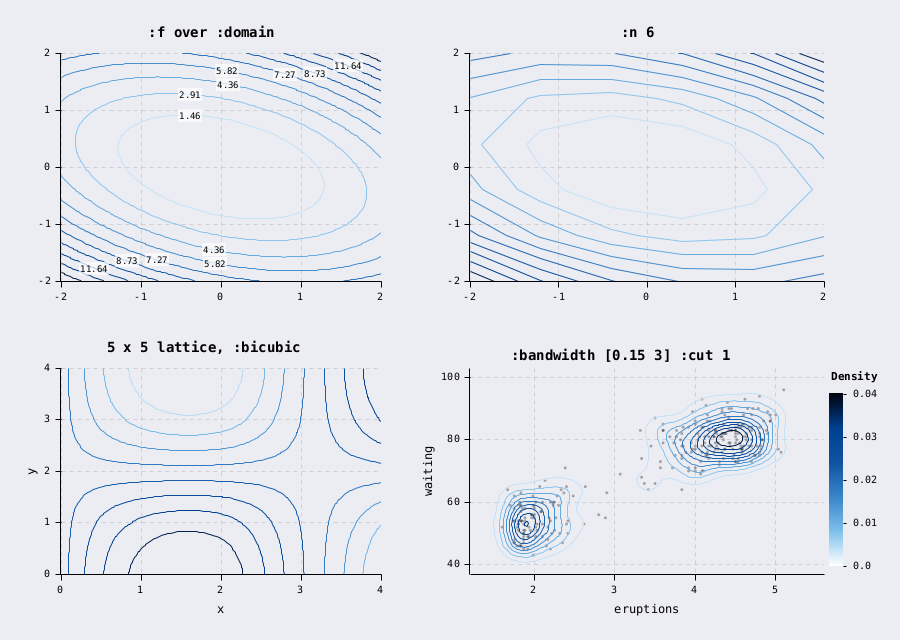
source: notebooks/reference/charts_bins_fields.clj